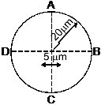
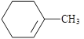
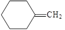
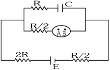

$
D =
\begin{vmatrix}
1 & 1 & 1\\
1 & 1+x & 1\\
1 & 1 & 1+y
\end{vmatrix}for \enspace x=0,y=0 \enspace then \enspace D \enspace is \enspace = \dfrac 1 4\left[ \dfrac{y^2}{2} + y \right]^2_\text{\(\frac 1 2\)} - \dfrac 1 2\left[ \dfrac{4+8-1+7}{3} \right]^2_\text{\(\frac 1 2\)} = \dfrac 1 4\left[ \dfrac{4+8-1+7}{8} \right] = \dfrac 1 4\left[ \dfrac{15}{8} \right] - \dfrac{9}{48} = \dfrac{15}{32} - \dfrac{6}{32} = \dfrac{9}{32}
$
AB is a vertical pole with B

at the point A from a certain point C on the ground is moves away from the pole along the line BC .
(a) This book leads to ban on DDT for  is an endocyclic Hoffmann product
(b) Agriculture throughout America  is an exocyclic Hoffmann product
(c) Creation of U.S. environmental protection agency. is an endocyclic saytzeff product
(d) Exocyclic Hoffmann product is an exocyclic saytezz product
Key - (d)
Sol:
Given, $
D =
\begin{vmatrix}
1 & 1 & 1\\
1 & 1+x & 1\\
1 & 1 & 1+y
\end{vmatrix}
$
$
Apply \enspace R2 \rightarrow R2 \enspace \text{--} \enspace R1 \enspace and \enspace R \rightarrow R3 \enspace \text{--} \enspace R1
$
$
\therefore \enspace D =
\begin{vmatrix}
1 & 1 & 1\\
0 & x & 0\\
0 & 0 & y
\end{vmatrix} = xy
$
2. AB is a vertical pole with B at the ground $ \dfrac{x^2}{cos^2 \enspace \alpha} - \dfrac{y^2}{sin^2 \enspace \alpha} = 1 $ , level and A at the top. A man finds that the angle of elevation of the point A
$
\begin{aligned}
\therefore I & = \int_{1}^e \dfrac{log \Bigg( \dfrac{1}{z } \Bigg)}{1 + \Bigg(\dfrac{1}{z } \Bigg)} \Bigg( - \dfrac{dz}{z^2} \Bigg) \\
& = \int_{1}^e \dfrac{(log 1 - log \enspace z)z}{z+1} \Bigg( - \dfrac{dz}{z^2} \Bigg) \\
& = \int_{1}^e \dfrac{log \enspace z}{z+1} \Bigg( - \dfrac{dz}{z} \Bigg) \\
& = \int_{1}^e \dfrac{log \enspace z}{z(z+1)} dz \\
\therefore I & = \int_{1}^e \dfrac{log \enspace t}{t(t+1)} dt \\
\int_{a}^b f(t)dt & = \int_{a}^b f(x)dx
\end{aligned}
$
 or the Hyperbola which of the following remains constant when $\alpha$ varies = ? from a certain point C on the ground is 60°.
(a) Moves away from the pole along the line
$
\therefore - (\overrightarrow{b} .\overrightarrow{c} ) = \dfrac{1}{3} \rvert\overrightarrow{b} \rvert \rvert \overrightarrow{c} \rvert \\
\therefore \enspace cos\theta = - \dfrac{1}{3} \\
\therefore \enspace sin\theta = - \dfrac{2\sqrt{x}}{3} \\
\Rightarrow \lim\limits_{x \rarr 0} \dfrac{f(x)}{x^2} = 2 \\
\Rightarrow \lim\limits_{x \rarr 0} \dfrac{a_0 + a_1 x + a_2 x^2 + a_3 x^3 + a_4 x^4}{x^2} = 2 \\
$
So, $\enspace a_0 = 0 , \enspace a_1 = 0,\enspace a_2 = 2 $
i.e., $ \enspace f(x) = 2x^2 + a_3 x^3 + a_4 x^4 \enspace \forall\enspace \# \enspace\exist \enspace\%\enspace \And\enspace \backepsilon \enspace\cong \textbf{AX} \enspace\Delta\enspace \Gamma $ to a point such that the angle of elevation of the $ \thetasym \Lambda \Pi \Theta \Sigma . \zeta \Omega \Xi \Psi $ point A is $ 45\degree $
(b) Then the height of the pole is $ \dfrac{-2\sqrt{3}}{3} \dfrac{1}{4} \Bigg[ \dfrac{4+8-1+4}{8} \Bigg] - \dfrac{1}{2} \Bigg[ \dfrac{8+1}{24} \Bigg] $
(c) A die is thrown. Let A be the event that the $ \dfrac{x - 2}{3} = \dfrac{y + 1}{4} = \dfrac{z - 2}{12} = \sqrt{16 + 9 + 144} = \sqrt{169} = 13 $
(d) that the number obtained is greater than $ 3 \Rightarrow \lim\limits_{x \rarr 0} \dfrac{a_0 + a_1 x + a_2 x^2 + a_3 x^3 }{x^2} $
$\begin{aligned} & \Rightarrow \lim\limits_{x \rarr 0} \dfrac{a_0 + a_1 x + a_2 x^2 + a_3 x^3 + a_4 x^4}{x^2} = 2 \\
& So, \enspace a_0 = 0 , \enspace a_1 = 0,\enspace a_2 = 2 \end{aligned}$
i.e., $ \enspace f(x) = 2x^2 $
$f(x) = 2x^2 + a_3 x^3 + a_4 x^4 $
$I = \int\dfrac{dx}{x^2(x^4 + 1)} * \dfrac{1}{1600+[6.8 - 58.8]^2} \\ $
$I = \int\dfrac{dx}{x^2{(x^4 + 1)}^\text{\(\frac 3 4\)}} = \int \dfrac{dx }{x^5 + \Bigg( x + \dfrac{1}{x^4} \Bigg)^\text{\(\frac 3 4\)}} $ . Let B be the event that the number obtained is less
Key - (b)
Sol. Given, equation of hyperbola $ \dfrac{x^2}{cos^2\enspace \alpha} - \dfrac{y^2}{sin^2\enspace \alpha} = 1 $
We know that the equation of hyperbola is $ \dfrac{x^2}{a^2} - \dfrac{y^2}{b^2} = 1 $
Here, $ a^2 = cos^2\enspace \alpha \enspace $ and $ \enspace b^2 = sin^2\enspace \alpha $
We know that, $ b^2 = a^2 (e^2 - 1) $
$ \Rightarrow sin^2\enspace \alpha = cos^2\enspace \alpha (e^2 - 1) $
$ \Rightarrow sin^2\enspace \alpha + cos^2\enspace \alpha = cos^2\enspace \alpha . e^2 $
$ \Rightarrow e^2 = 1 + tan^2\enspace \alpha = sec^2\enspace \alpha \Rightarrow e = sec^2\enspace \alpha $
$ \therefore ae = cos \alpha.\dfrac{1}{cos \alpha} $
Co-ordinates of foci are $ (\pm ae,\enspace 0)$ i.e. $(\pm 1,\enspace 0) $
Hence, abscissa of foci remain constant when $\alpha $ varies.
3. The function $ \> f(x) = tan^{-1}(sin \enspace x + cos \enspace x) $ is an increasing function. If $ f^{\prime}(x) \gt 0 $ then $ f(x) $ is increasing function
$ \therefore - (\overrightarrow{b} .\overrightarrow{c} ) = \dfrac{1}{3} \rvert\overrightarrow{b} \rvert \rvert \overrightarrow{c} \rvert - \therefore cos\theta - cos\theta \dfrac{1}{3} \Rightarrow \lim\limits_{x \rarr 0} \dfrac{f(x)}{x^2} = 2 $
$ \therefore sin \theta = \dfrac{2\sqrt{2}}{3} \Rightarrow \lim\limits_{x \rarr 0} \dfrac{f(x)}{x^2} = 2 $
$\Rightarrow \lim\limits_{x \rarr 0} \dfrac{a_0 + a_1 x + a_2 x^2 + a_3 x^3 + a_4 x^4}{x^2} = 2 $
So, $ a_0 = 0 \enspace a_1 = 0 \enspace and \enspace a_2 = 2 $
i.e. $ f(x) = 2x^2 + a_3x^3 + a_4x^4. $ A focus of an ellipse is at the origin. The directrix is the line x = 4 and the eccentricity is 1/2. Then the length of the semi-major axis
(a) A parabola has the origin as its focus$ \Bigg(0, \dfrac{\pi}{2} \Bigg) 3 tan^{-1} x = tan^{-1}\dfrac{3x-x^3}{1-3x^2}$
(b) A origin as its focus$ \Bigg( -\dfrac{\pi}{2}, \dfrac{\pi}{2}\Bigg) (\overrightarrow{a}\times\overrightarrow{b}) \times \overrightarrow{c} =\dfrac{1}{3} \rvert \overrightarrow{b} \rvert \rvert\overrightarrow{c} \rvert \overrightarrow{c}. \enspace (2x - 5y + z - 3) - \dfrac{11}{2}(x+y+4z-5)=0 \enspace x+3y+6z-7=0 $
(c) focus and the line x = 2 as the directrix $ \Bigg( \dfrac{\pi}{4},\dfrac{\pi}{4} \Bigg) tan^{-1} y = tan^{-1} x + tan^{-1} \Bigg( \dfrac{2x} {1-x^2} \Bigg) $
(d) line x = 2 as the directrix focus and the $ \Bigg( -\dfrac{\pi}{2},\dfrac{\pi}{4} \Bigg) 3\lambda + 2 - 4\lambda+2 = 16-11\lambda+5 = 16 tan^{-1} \Bigg(\dfrac{3x - x^3}{1-3x^2}\Bigg) \enspace 3tan^{-1} x = tan^{-1} \Bigg(\dfrac{3x - x^3}{1-3x^2}\Bigg) $
Key - (d)
Sol.
Given $ f(x) = tan^{-1} (sin \enspace x + cos\enspace x) $
$ f^{\prime}(x) = \dfrac{1}{1+ (sin x + cos x)^2 } . (cos x - sin x) $
$ = \dfrac{\sqrt{2} \Bigg(\dfrac{1}{\sqrt{2}} cos x - \dfrac{1}{\sqrt{2}} sin x\Bigg)} {1 + (sin x + cos x)^2} \text{\textdollar} $
$ = \dfrac{\Bigg( cos \dfrac{\pi} {4} . cosx - sin\dfrac{\pi} {4}.sinx \Bigg)}{ 1 + (sinx + cosx)^2} $
$ \therefore f^{\prime}(x) = \dfrac{\sqrt{2} cos \Bigg( x + \dfrac{\pi}{4} \Bigg)}{ 1 + (sin x + cos x)2} $
Hence f(x) is increasing, if $ - \dfrac{\pi}{2} < x + \dfrac{\pi}{4} < \dfrac{\pi}{2} $
$ \Rightarrow -\dfrac{3\pi}{4} < x < \dfrac{\pi}{4} $
Hence, $f(x)$ is increasing when $ n \in \Bigg( - \dfrac{\pi}{2} , \dfrac{\pi}{4} \Bigg) $
4. Let $ f : N \to Y $ be a function defined as $ f (x) = 4x + 3$, Let equals where $Y =\{f \in N: y = 4x + 3 \enspace for \enspace some \enspace x \in N\} $ Show that if f is invertible and its inverse is
$ a_0=0,\enspace a_1=0,\enspace a_2=2 $
$ i.e., f(x) = 2x^2 $
$ f(x) = 2x^2 + a_3x^3 + a_4x^4 $
$ I = \int \dfrac{dx}{x^2(x^4 + 1)} \times \dfrac{1}{1600+[6.8-58.8]^2} $
$ I = \int \dfrac{dx}{x^3(x^4 + 1)^\text{\(\frac 3 4\)}} = \int \dfrac{dx}{x^3 \Bigg( x + \dfrac{1}{x^4} \Bigg)^\text{\(\frac 3 4\)}} $
$ \Rightarrow \lim\limits_{x \rarr 0} \dfrac{a_0 + a_1 x + a_2 x^2 + a_3 x^3}{x^2} = 2 $
$ \Rightarrow \lim\limits_{x \rarr 0} \dfrac{a_0 + a_1 x + a_2 x^2 + a_3 x^3 + a_4 x^4}{x^2} = 2 $
$ = a \enspace tan\alpha \begin{bmatrix} 1 - \dfrac{a}{\dfrac{2u^2} {g} cos^2\alpha \dfrac{sin\alpha}{cos \alpha} } \end{bmatrix} $
(a) neither S nor T is an on $ \dfrac{x-2}{3} = \dfrac{y-1}{4} = \dfrac{z-2}{12} = \lambda $ equivalence relation
(b) both S and T are equivalence relations
$ 3\lambda + 2 - 4\lambda+1+12\lambda+2 = 16 $
$ = \begin{bmatrix} 5 & 5\alpha & \alpha\\ 0 & \alpha & 5\alpha \\ 0 & 0 & 5 \end{bmatrix} and \enspace \rvert A^2 \rvert = 25 $
$ 11\lambda + 5 = 16 $
(c) is an equivalence not $ x - y + z = 16 $ relation on R but T is
(d) T is an equivalence relation $ 3tan^{-1}x = tan^{-1}\Bigg( \dfrac{3x - x^3}{1-3x^2} \Bigg) $
$ = \begin{bmatrix} 5 & 5\alpha & \alpha\\ 0 & \alpha & 5\alpha \\ 0 & 0 & 5 \end{bmatrix} \begin{bmatrix} 5 & 5\alpha & \alpha\\ 0 & \alpha & 5\alpha \\ 0 & 0 & 5 \end{bmatrix} $ quivalence relation
Key - (a)
Sol. Given $ A^2 = \begin{bmatrix} 5 & 5\alpha & \alpha\\ 0 & \alpha & 5\alpha \\ 0 & 0 & 5 \end{bmatrix} $ and $ \rvert A^2 \rvert = 25 $
$ \therefore A^2 = \begin{bmatrix} 5 & 5\alpha & \alpha\\ 0 & \alpha & 5\alpha \\ 0 & 0 & 5 \end{bmatrix} \begin{bmatrix} 5 & 5\alpha & \alpha\\ 0 & \alpha & 5\alpha \\ 0 & 0 & 5 \end{bmatrix} $
$ = \begin{bmatrix} 25 & 25\alpha+5\alpha^2 & 5\alpha+25\alpha^2+5\alpha \\ 0 & \alpha^2 & 5\alpha^2+25\alpha\\0&0&25 \end{bmatrix} $
$ \therefore \rvert A^2 \rvert = 25 (25\alpha^2) $
$ \therefore 25 = 25(25\alpha^2) \Rightarrow \rvert\alpha\rvert = \dfrac{1}{5} $
Zomant testing formual differnece
Formula code for both
Zoom testspost Qns
\Rightarrow \lim_{x \rightarrow 0} \frac{a_{0}+a_{1} x+a_{2} x^{2}+a_{3} x^{3}+a_{4} x^{4}}{x^{2}}=2From demo files given by developer
\Rightarrow \lim\limits_{x \rarr 0} \dfrac{a_0 + a_1 x + a_2 x^2 + a_3 x^3 + a_4 x^4}{x^2} = 2Formuals Display
Zoom testspost Qns
$\Rightarrow \lim_{x \rightarrow 0} \frac{a_{0}+a_{1} x+a_{2} x^{2}+a_{3} x^{3}+a_{4} x^{4}}{x^{2}}=2$From demo files given by developer
$\Rightarrow \lim\limits_{x \rarr 0} \dfrac{a_0 + a_1 x + a_2 x^2 + a_3 x^3 + a_4 x^4}{x^2} = 2$